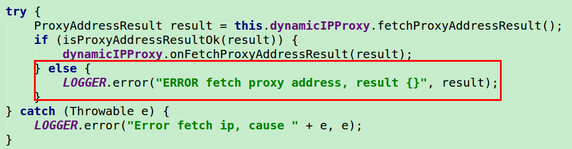
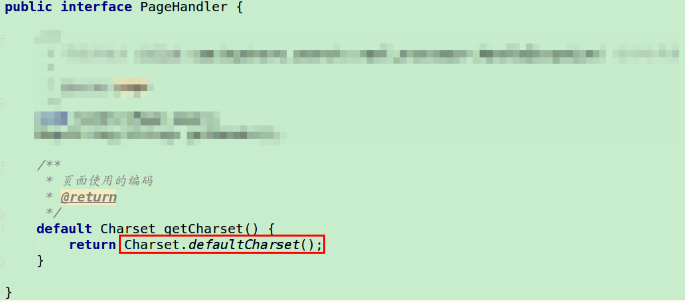
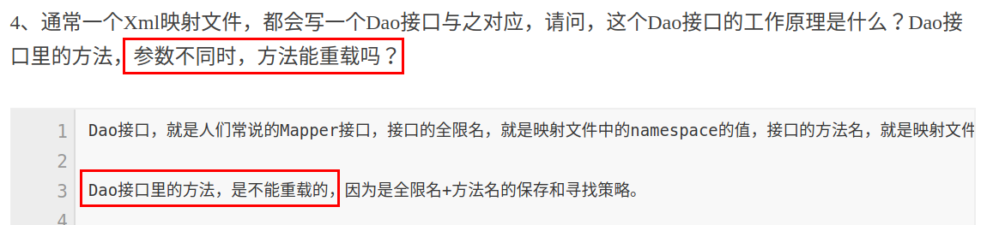
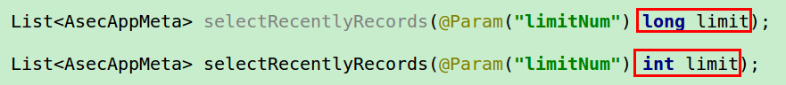

记录开发中遇到的有关编码、设计模式的一些问题与思考。
不要吞掉 NULL 或者 Exception 信息
如图，就是忘记添加 else 行了，导致没有日志输出，找不到代码运行到哪里停了。

如下，就是原来没有书写 Exception，导致 DB 连接不上很久了，也没有从日志里面查询出任何一行 Error 信息:

数据来源要支持多样化
如下是内嵌在某个类里面的部分代码片段:
|
|
这样写的时候，就会导致特别难写测试类。这段代码严重依赖URLDownloader.download这个方法，严重依赖网络，我们的目的就是为了获取 List<InetSocketAddress> ，在项目实际运行的时候，socketAddressPool 可能是依赖网络需要联网去下载数据并解析的，然而在开发过程中，编写测试的时候，不应该这么直接做。
要想到支持测试类的数据来源，要明白开发中的任何一项数据应该至少拥有两个来源，要意识到能够很方便的给某个类构建伪数据是一件很重要的事情，千万不要限定死数据的来源:
- 主线来源: 项目运行过程中实际的数据来源
- 测试来源: 通过测试类来构造的伪数据来源
这也正是接口的用武之地之一。
让方法行为可确定

我们在本地跑的项目，请求页面没有任何编码问题，然而这段代码部署到服务器上，就开始出现页面乱码问题。原因就是：
- 想当然了，想当然认为这个方法返回的就是默认编码，想当然认为
Java的跨平台性为我们屏蔽了任何编码问题，想当然认为这段代码在任何OS、用任何的Java版本都能够保持初心返回一个唯一的确定的值。 - 没有好好阅读
Java文档。事实上，这个方法的Documentation已经很明确地告知了开发者: The default charset is determined during virtual-machine startup and typically depends upon the locale and charset of the underlying operating system (依赖LOCALE和底层操作系统的编码). - 存在侥幸心理。侥幸认为我不用关心这段代码背后究竟是怎么运行的，背后究竟是怎么获取的默认编码，项目依旧可以好好的运行。
- 快点完成项目的心理。错误地认为自己不测试
Charset.defaultCharse所省下来的时间就真的省下来了。
实践是检验真理的唯一标准
以下是读到一篇Mybatis 的常见面试题时候所看到的:

心理第一反映: Mapper 接口里面的方法是不能重载的，这个知识点还是我第一次遇见，下次面试官问我我也就直接回答上了，美滋滋。
然而，当想亲自验证一下的时候，我发现在 Mapper 里面，重载方法竟然是 OK 的，声明上第二个方法之后，能够正确调用 Mapper 中的 selectRecentlyRecords 方法，且一切运行正常:

后经过一番验证，才发现确切的说应该是 Mapper.xml 中的 <select> 节点的 id 要唯一！
网络不可不信但网络也不可尽信之！搜索引擎虽然加速了知识传播的速度，加快了我们获取知识的速度，但是知识的来源参差不齐，可信度也随之下降，我们对知识的可辨度也要随之提升才行。所以一定要亲自验证。
类名要反映类的行为
类名 AppMetaTableKeywordGenerator 只能看出是基于 app_meta 这张表里面的某些数据写的一个关键字生成器，但是看不出这个类的行为所在，这个类的行为描述不清楚。取
LimitNumberKeywordGeneratorDateSinceKeywordGenerator
应该要更好一些吧！
迪米特法则的用武之地
如下，一开始写的是一个类似于下面的版本A，觉得并未有什么不妥:
|
|
使用的时候如下所示:
|
|
但是很快，我想使用同一份 List<Keyword> 来多次调用 XXXVersion#generate 方法,我发现我不得不重复的调用 KeywordGenerator#generate 的方法来生成多次 List<Keyword> 方法:
|
|
在版本 A 的实现中，我们违背了迪米特法则，没有直接传入 List<Keyword> 这个数据结构。我们需要的其实不是 KeywordGenerator，而是 List<Keyword>，XXXVersion 这个类不应该关心 List<Keyword> 是从哪里生成的，它只接受 List<Keyword> 就能工作，因此写下来 XXXVersionB 这个类:
|
|
最终我们的代码如下所示:
|
|
在 Context、Environment、Manager 中，一般来说，都是可以违背迪米特法则的，并且也没有什么大的问题。但是在一般的类与类的沟通中，我们应该遵循迪米特法则。
三思！基于字符串的数据结构
- 抽象性:字符串的抽象度够不够？能否真正的反映了某个实体的本质。
- 扩展性:一个字符串可以的话，那么未来是否会有需求需要添加其它的围绕这个字符串的东西?一开始基于字符串的话，扩展可能是一个难题!
举例:
第一个版本的 CommentParser 的设计:
|
|
到第二个版本的 CommentParser 的变化:
|
|